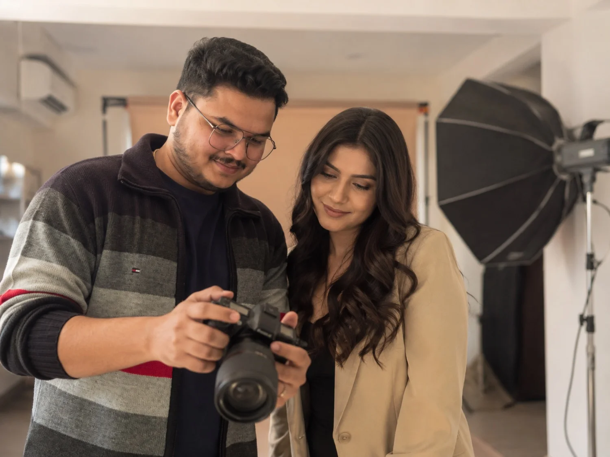

Almost every client tells me the same thing on the day: "I didn't really know what to expect." This is the walkthrough I wish more photographers gave upfront: exactly what happens, in order, from booking to delivery.
Most of the anxiety around a first photoshoot isn't about the camera or the photos at all. It's not knowing the shape of the day - how long it takes, what you're supposed to do with your hands, whether there's a "wrong" way to show up. There isn't. But knowing the actual sequence removes almost all of that nervousness, so here's what a session with me looks like from start to finish.
1Before the Shoot
Every session starts with a short conversation, usually over WhatsApp or a call, before anything is booked. I ask what the shoot is for - portfolio, personal portraits, a brand, an editorial concept - because that shapes everything downstream: location, wardrobe, how many looks we plan, even the time of day. We settle on a date, a location (studio, indoor, or on-location), and I send over a simple brief: what to bring, what to wear, and what time to arrive.
I deliberately keep this stage light. Clients who've never modeled or shot before often want a rigid shot list, and I'd rather give direction on the day than lock everything down two weeks in advance based on guesses.
2Getting Ready
If hair and makeup are part of the booking, that happens first, usually 45 minutes to an hour before we start shooting, depending on the look. If it's a simpler, natural session, this step is just changing into the first outfit and getting comfortable in the space.
This is also when I do my own setup - lights, backdrop if needed, test shots against a stand-in or the wall to dial in exposure before the client is ever in front of the camera. I want the technical side solved before we start, not worked out live while someone's waiting.
3The First Few Minutes
Nobody looks natural in the first sixty seconds, and I don't expect anyone to. The first few frames are always a little stiff - that's normal, and I'm not judging them as final images. I'll usually start with something low-pressure: walk toward me, look out the window, adjust your hair. Small, simple actions that give you something to do other than "pose," which is where most of the awkwardness comes from.
Nobody looks natural in the first sixty seconds. I'm not judging those frames - I'm just getting you moving.
Within about five to ten minutes, almost everyone relaxes into it. I talk the whole time - what's working, small adjustments to chin or shoulders, when to breathe out, when a great frame just happened. Silence is what makes people self-conscious, not direction. If you'd like a sense of what that direction actually sounds like before your session, our posing guide for first-timers covers the basics.
4The Shoot Itself
A session runs long enough to properly cover the plan - number of looks, locations within the shoot, whether it's portraits or a full editorial concept - and the exact length is confirmed with you as part of booking rather than fixed in advance. We work in blocks: one setup or outfit at a time, shot until I'm confident I have it, then a short break to change, reset hair, or just breathe before the next one.
I check the back of the camera regularly and show you frames as we go, not just at the end. This does two things: it lets you adjust in real time if something about the styling or angle isn't working, and it builds confidence, because you can see the images are actually turning out well before the shoot ends.

5Wrapping Up
Once we've covered every look or setup on the plan - or once I'm confident we've got strong coverage even without a rigid plan - we wrap. I'll usually do a quick pass through the back of the camera with you at the end, flagging which frames I think are the standouts, so you leave with a sense of what to expect before you've even seen an edited image.
No one leaves a session with me not knowing roughly what they got. That immediate feedback loop is, in my experience, the single biggest thing that separates a shoot that feels professional from one that feels like a guessing game.
6Editing & Delivery
After the shoot, I cull through everything and select the strongest frames, prioritising variety and quality over raw quantity. Selected images get retouched: skin, color, light cleanup, nothing that changes who you actually are. Turnaround depends on the scope of the shoot and how many images are being delivered, and I'll confirm a timeline with you as part of the booking.
You'll get a private online gallery to review and download from - full resolution, ready for print or social. If it's a modeling portfolio or agency submission, I'll also flag which images I think work best for that specific use, since a shot that's great for Instagram isn't always the one an agency wants to see first.
None of this is complicated once you've seen it laid out. The reason it feels intimidating beforehand is simply that most people have never had it explained. If you know roughly what's coming - the setup, the warm-up, the direction, the review, the wait for the gallery - there's very little left to be nervous about.
Show up, and I'll handle the rest.
Work with me
Based in Dubai. Available for portrait sessions, model portfolio shoots, and brand content. First-timers welcome, I'll walk you through everything before we start. WhatsApp is the fastest way to reach me.